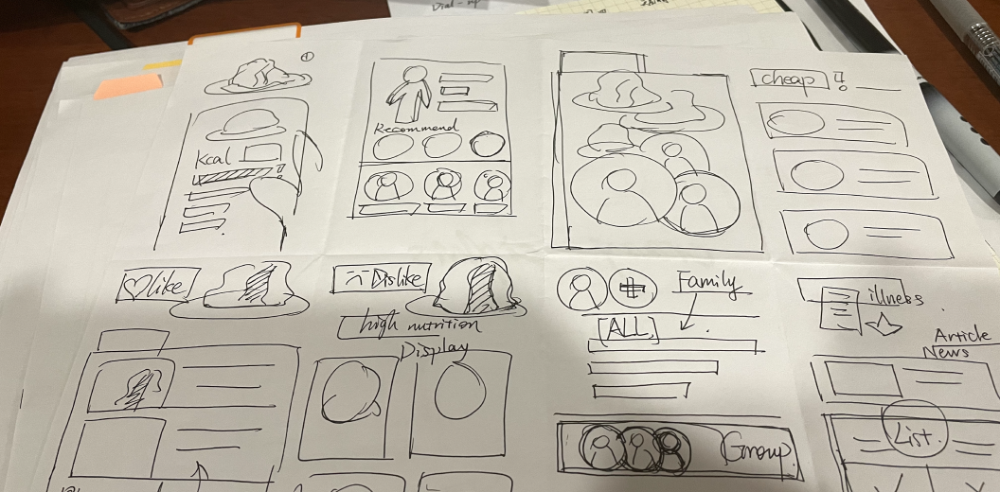
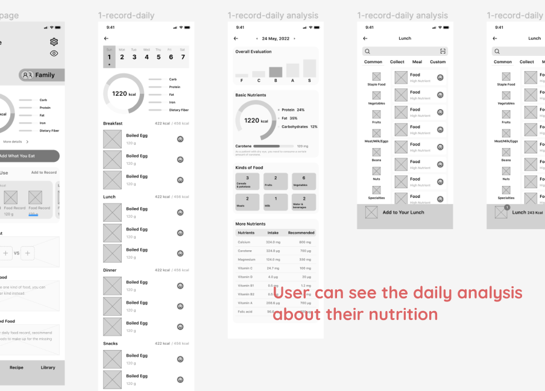
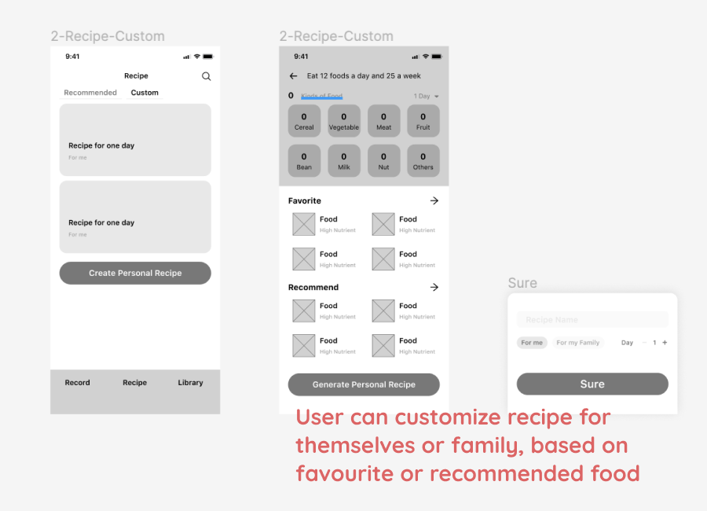
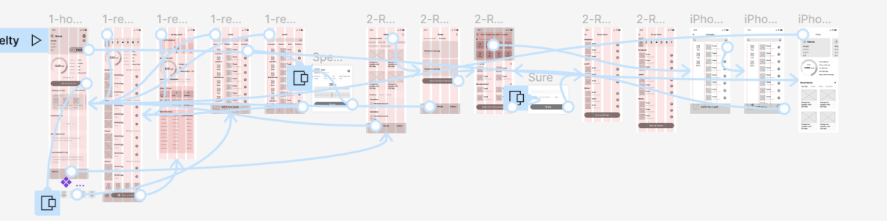
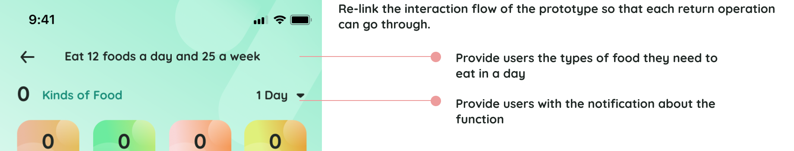
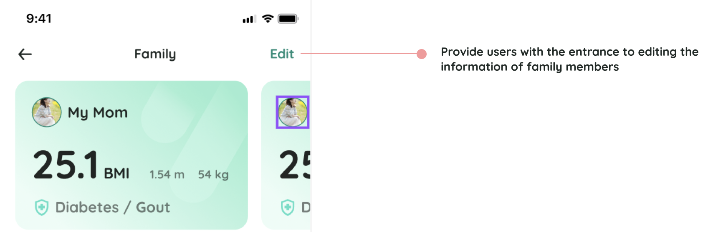
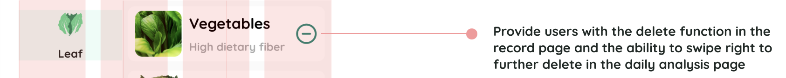
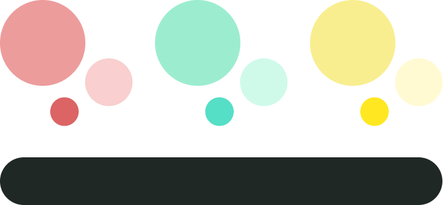
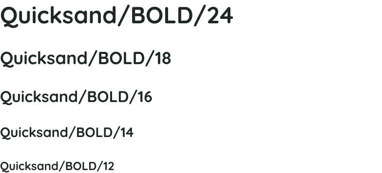
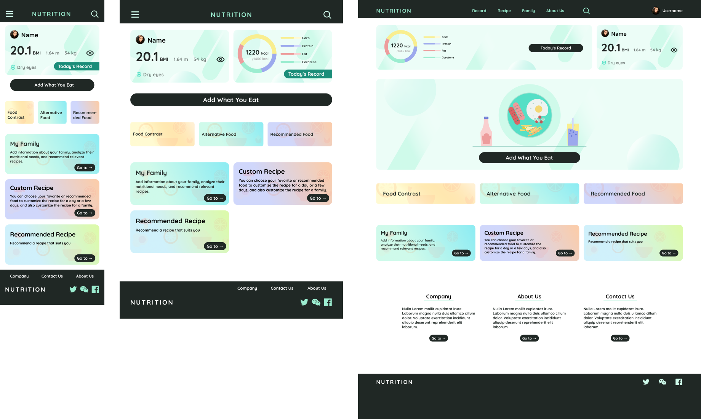

Nutrition App and Responsive Website
By : ZWQ
Duration : Agu 10 ∼ Sep 9 , 2022
Product Overview
My Role
UX designer leading the app and responsive website design from conception to delivery
My Responsibility
Conducting interviews, paper and digital wireframing, low and high-fidelity prototyping, conducting usability studies, accounting for accessibility, iterating on designs, determining information architecture, and responsive design.
The Product
Nutrition App is an app that helps people keep healthy diet for themselves and their families. Users can keep records and analysis the nutrients one day, and customise recipes for themselves and thier families.
The Problem
When people are busy with their work, they often neglect to eat a balanced diet, which affects their health. Some middle-aged and elderly people with some chronic diseases need to pay extra attention to diet, but they do not have the relevant diet knowledge, do not understand what should eat more and less what to eat; Each member of the family needs to supplement nutrition according to individual constitution is slightly different, how to coordinate three meals a day to make the family eat healthier?
The Goal
Design an app that helps users record their diet, recommend appropriate food and recipes according to their physical conditions, and help users provide reasonable diet for their families.
User Research
By conducting user interviews, I found that most of the work are busy, so do not pay attention to the diet, often just to cope with a meal, eat also is not very healthy, only there is something wrong with the body, they began to pay attention to preserve one's health and diet seriously, now many people have some basic diseases, need to be pay attention to diet, and I found in the interview, they don't have the knowledge, They don't know how to eat well for themselves, and many family members who are in charge of the family's diet don't know what dishes to prepare to meet the nutritional needs of the family.
Persona : Zhu
Problem Statement
As a relatively affluent newcomer to the workplace, Zhu hopes that an app can recommend foods to supplement his lack of nutrition and suggest which ingredients to cut down on. He hopes to recommend healthy foods that are more affordable.
Persona : Wong
Problem Statement
As a near-retiree who loves her family deeply and has some chronic diseases herself, Wong wanted an app that could recommend foods suitable for her and her family based on their physical conditions and provide daily recipes.
User Journey Map
Zhu
Wong
Competitive Audit
I looked at several potential competitive companies, two for direct competition and two for indirect competition. The products mostly focus on fitness, while the diet function works for fitness. There are still many unique highlights among competing products.
- Users can record their daily meals
- Users can record the physical health of family members
- Users can get recommended recipes
Ideation
I did Crazy Eight to come up some ideas. ome up with ideas for how to address gaps identified in the competitive audit. My focus was specifically on family recipe and customize personal recipe.
Wireframe
After ideating and drafting some paper wireframes, I created the initial designs for the Nutrition app. I focus on two features, recording and customizing recipe.
  Low-fidelity prototype can be viewed at here Usability Study
Study Type : Moderated Usability Study
Participants : 5 Participants
Length : Above 10 minutes
Navigation
Many Users were confused about the customizing function bacause of the unclear operating procedures
Notification
Many Users were confused about how to edit the recorded food and if they add a record without any notifications
Family
Many Users were confused about the ambiguous display of the family text information
High-fidelity Prototype
Mockup
  Color
Font
High-Fidelity Prototype
Accessibility considerations
1
Clear labels for interactive elements that can be read by screen readers. And clear notifications for special functions.
2
Allow users to turn off the display of personal information to protect privacy.
Responsive Website
sitemap
With the app designs completed, I started work on designing the responsive website.
Responsive designs
What I Learned
I learned that even though the problem I was trying to solve was a big one, diligently going through each step of the design process and aligning with specific user needs helped me come up with solutions that were both feasible and useful.
Next Step
Clearify the steps of edit family information.
Dig in the function of alternative food.